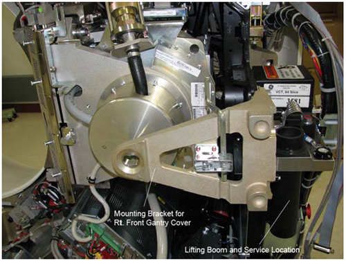
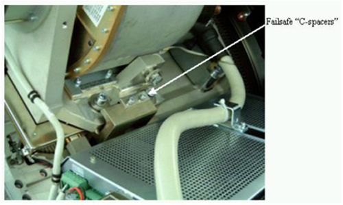
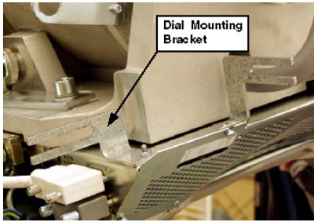
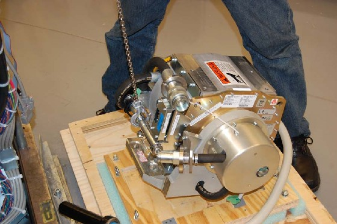

Proprietary to General Electric
Direction 5307452-8EN, Rev# 4
Discovery CT750 HD Service Methods - Adv
Proprietary to General Electric |
| Required Persons | Preliminary Reqs | Procedure | Finalization |
|---|---|---|---|
| 1 | N/A | 10 - 14 | 3 hours |
This document provides the necessary steps to replace and configure the Performix HD tube for imaging.
| Last Revised: | 28 October 2008 |
| Item | Qty | Effectivity | Part# | Manufacturer | |
|---|---|---|---|---|---|
| Chain Hoist | 1 | - | 5149069 (Non-CE); 5192679 (CE) | - | |
| Tube Coolant Air Removal Kit | 1 | - | 5151778 | - | |
| Tube Oil Compensation Tool | 1 | - | 5125182 | - | |
| Tube Coolant Flow Rate Meter | 1 | - | 5151781 | - | |
| High Voltage Bleeder Kit | 1 | - | 2345332-2 | - | |
| Tube mounting hardware kit | 1 | - | Shipped with replacement tubes | - | |
| Gantry hoist, post and boom | 1 | - | - | - | |
| Calibrated Torque Wrench Set | 1 | - | - | - | |
| Dial Indicator Gauges | 2 | - | - | - | |
| Digital Multimeter | 1 | - | - | - | |
| Oscilloscope | 1 | - | - | - | |
| Item | Qty | Effectivity | Part# | Manufacturer |
|---|---|---|---|---|
| Dry Wipes or Paper Towel | As required | - | - | - |
| Mineral-based dielectric (Transformer) Oil | 1 Gallon | - | T0552G | - |
| Ty-Raps® | As required | - | - | - |
| Item | Qty | Effectivity | Part# | Manufacturer | |
|---|---|---|---|---|---|
| Tube | 1 | - | - | - | |
| POTENTIAL FOR ELECTRIC SHOCK | |
| VOLTAGES MAY BE PRESENT | |
| USE PROPER LOCKOUT/TAGOUT PROCEDURES BEFORE REPLACING COMPONENTS. |
| POTENTIAL FOR PERSONAL INJURY (PINCH, CRUSH, ENTANGLEMENT OR IMPACT INJURIES ARE POSSIBLE.) | |
| GANTRY HAS ROTATING ASSEMBLY | |
| USE THE GANTRY ROTATIONAL LOCK, TO PREVENT UNCOMMANDED MOTION OF THE GANTRY ROTATING ASSEMBLY. |
| Follow ALL required safety and PPE procedures customary for your organization when working on this product. | |
| The heat exchanger may take on excessive amounts of coolant due to thermal expansion. If the tube is not allowed to cool prior to tube change, the system will not scan and the heat exchanger will require replacement. Wait at least 1 hour after the last scan before disconnecting the tube from the heat exchanger. | |
| Condition | Reference | Eff |
|---|---|---|
For Performix HD X-ray Tube. | - | - |
Recommend procedure completion by GE trained service personnel. | - | - |
Move the table to its home position.
Remove the right side gantry cover.
Turn OFF the HVDC ENABLE, AXIAL DRIVE ENABLE, and 120 VAC switches on the Service Switch Panel.
| NOTE: | Gantry power (120 / 208 VAC ) must not be on with any of the coolant / heat exchanger hoses disconnected. With Gantry power on and the cooling loop incomplete, the pump will run uncontrollably and become damaged. |
Remove scan window.
Remove gantry left side, top, and front covers.
Remove the M12 bolts holding the mounting bracket ( Illustration 1) for the right front gantry cover and set the assembly aside. It may be necessary to tilt the gantry back to remove the third bolt (not normally installed).
Illustration 1: Mounting Bracket

Position gantry so that the tube is positioned between 11 and 12 o'clock, and the High Voltage Tank is at the 3 o'clock position.
Free the High Voltage cable.
Carefully cut all Ty-Raps securing High Voltage cable. Note High Voltage cable routing.
Loosen the cable locking ring.
Pull cable terminal stick out of its receptacle on High Voltage tank. Transfer the plastic sleeve from the new tube over the High Voltage cable stick. DO NOT lose the rubber-sealing ring.
Place a cap or enough paper towels in the newly created hole on the High Voltage tank receptacle to prevent oil from leaking when you manually rotate the gantry to remove the tube.
| NOTE: | The High Voltage cable candlestick has a rubber-sealing ring that must not be lost. |
Remove the 2 failsafe “C-spacers” on the top and the bottom. Keep hardware for re-installation with new tube.
Illustration 2: Failsafe Collimator “C-Spacers”

Manually rotate the gantry until the X-Ray tube reaches the 3 o'clock position.
| NOTE: | CRUSH POINT. IF THE GANTRY IS NOT SECURELY LOCKED, UPON REMOVAL OF THE X-RAY TUBE, THE GANTRY WILL VIOLENTLY ROTATE DUE TO WEIGHT IMBALANCE. ENSURE ATTEMPTING TO ROTATE THE GANTRY BY HAND SECURELY LOCKS THE GANTRY. |
Engage rotational lock according to lockout/tagout procedure.
Disconnect thermal sensor from Power I/F board at J7. Cut any Ty-Raps holding the wires to the gantry.
Remove dial-mounting bracket.
Illustration 3: Dial Mounting Bracket

Disconnect anode stator cable from aux box.
Remove 3-pin connector from aux box.
Disconnect the clamp holding the cable to aux box. Keep the clamp, as you will need it for the new tube.
Remove the POR (Z-Align) adjuster block assembly. Keep hardware.
Disconnect the pump from the tube at the quick-disconnect (QD). Align the pin with the slot on the QD and disconnect. Discard the QD safety mechanism bolts. The new tube comes with new hardware.
Disconnect X-Ray tube from heat exchanger at quick-disconnect.
Insert the lifting post, boom, and chain hoist. Refer to Illustration 1 for location.
Disconnect Smart ID cable from Smart ID module (on tube).
Connect hoist to the tube lifting bar.
Ensure that the hoist joint is centered directly above the tube (chain hangs vertically).
Remove slack in chain but do not over tighten. The tube should not move when the mounting bolts are removed.
Remove the bottom two M12 mounting bolts, and then remove the upper bolts.
Discard the mounting bolts and washers. The new tube comes with new mounting bolts.
| NOTE: | Be careful not to damage the fragile copper filter on the tube window. |
Remove the cover of the new tube crate. Flip it over and place it on the floor below the old tube suspended on the hoist. The cover will become the base of the container for returning the old tube from the field.
Place the old tube on the crate cover for shipping ( Illustration 4).
Illustration 4: Hoisting Tube

Secure the old tube to the tube crate cover using the adjustable straps.
Allow the new tube unit to warm to room temperature before you install it.
Place the new tube crate on the floor near the gantry where it can be accessed by the hoist.
Remove the center section of the tube crate and attach it to the crate cover holding the old tube.
With the new tube exposed, remove the adjustable straps so that you can attach the hoist to the tube lifting bar and use the hoist to lift the tube free of the crate.
| NOTE: | CRUSH POINT. THE TUBE LIES ON ITS SIDE IN THE CRATE AND WILL FLIP 90 DEGREES WHEN IT IS RAISED. ENSURE THAT YOU PLACE THE CRATE SO THAT THE TUBE HITS NEITHER YOU NOR THE GANTRY AS IT IS RAISED OUT OF THE CRATE. |
| NOTE: | Use care when hoisting the tube, to avoid equipment damage. |
With tube suspended, remove the protective cover and visually inspect the copper filter ( Illustration 5).
Illustration 5: Remove Protective Cover for Inspection

The primary copper filter is easily examined, since it is part of the tube and is visible. The copper filter should be clean, as well as dent- and scratch-free:
If contamination is visible (see Illustration 6), proceed to the Collimator Cleaning Procedure.
If scratches or dust are visible, the copper filter must be replaced.
Slight discoloration is acceptable.
Illustration 6: Extremely Contaminated Copper Filter
Carefully swing the tube into place. The tube casing should slide in between the collimator frame “fingers”.
| NOTE: | When attaching the tube, be careful with the copper filter. It should be free of debris, scratches and dust. The reason is particles create artifacts in the image by affecting the attenuation properties of the copper filter. |
Using the new pre-assembled mounting hardware shipped with the tube, align the tube mounting through-holes with the mounting points on the collimator frame. Hand-turn the four M12 mounting bolts into the holes a few turns. This enables easier alignment of the tube and interposer plate.
The hardware used to mount the X-ray tube comes pre-assembled with the new tube.
| NOTE: | POTENTIAL FOR PATIENT INJURY. X-RAY TUBE IS ON ROTATING ASSEMBLY. SELECT PROPER BOLT KIT FROM TUBE CRATE, BASED ON SYSTEM TYPE. NEVER MIX THE MOUNTING HARDWARE TYPES. |
| NOTE: | EJECTION HAZARD. TUBE MAY EJECT IF IMPROPER MOUNTING HARDWARE COMBINATION USED. READ THE FOLLOWING INSTALLATION INSTRUCTIONS CAREFULLY TO ENSURE THAT THE PROPER MOUNTING HARDWARE IS USED. |
Illustration 7: Pre-assembled Bolt / Lock Washer / Standoff

Finger-tighten the bolts. Getting the tube to lie flat during this step is important.
| NOTE: | Using the ISO adjustment bolt to move the interposer plate up or down can aid in getting the tube to lie flat. |
Disconnect the hoist.
Disengage the rotational lock.
Rotate the tube to 12:00.
Engage the rotational lock.
Shake the tube until it settles into its centered position on the interposer plate.
Visually check that the tube is close to centered in the Z-direction (for reference, the table cradle moves in the Z-direction).
Apply the following pre-load torque to the M12 mounting bolts.
| 25 ft.-lbs | 33 N-m | 295 in-lbs | 340 kg-cm |
Apply the following final torque to the M12 mounting bolts.
| 49 ft.-lbs | 66 N-m | 590 in-lbs | 680 kg-cm |
| NOTE: | Do not turn 120 / 208 VAC Gantry power on with any of the coolant/ heat exchanger hoses disconnected. With Gantry power on and the cooling loop incomplete, the pump will run uncontrollably and become damaged. |
Place the original tube crate base on top of the crated old tube and secure its locking hardware. Move the tube crate away from the gantry to give easier access.
Remove the post and boom from the gantry.
Disengage the rotational lock.
Reattach the SMART ID cable.
Connect both the pump AND the heat exchanger hoses to the tube.
Secure the quick-disconnect safety locking mechanisms using new hardware from the tube crate. The torque specification for the quick-disconnect safety mechanisms is 7.9 N-m (5.8 lb-ft, 70 lb-in, 81 kgcm). However, if the locking mechanism rotates in relation to the quick-disconnect, tighten slowly until it does not do so.
| NOTE: | Do not severely over-tighten the M6 bolts. Doing so can cause the quick-disconnects to leak. |
Reattach the POR adjuster block assembly.
Connect the stator cable to the Auxiliary Box. Use the clamp from the old tube to attach the exposed shield to the aux box.
Reattach the dial-mounting bracket.
Connect the thermal sensor to the Power Interface Board, J7.
Reattach the failsafe C-spacers. See Illustration 2.
| NOTE: | PATIENT OR OPERATOR CRUSH HAZARD. IMPROPER MOUNTING CAN RESULT IN TUBE EJECTION AND SERIOUS INJURY. MOUNT TUBE ACCORDING TO INSTRUCTIONS, INCLUDING NEW MOUNTING HARDWARE AND C-SPACERS. |
Rotate the gantry so the tube is positioned between 11 and 12 o'clock and the High Voltage Tank is at the 3 o'clock position.
Connect the High Voltage cable by following the Securing High Voltage Cable procedure.
| NOTE: | Incorrectly sealed and secured High Voltage cable can lead to damage to the tank, tube, or other parts of the gantry. |
Check for oil leaks by rotating the gantry slowly.
Manually rotate the gantry, at least one full revolution, and verify that no rubbing occurs.
Ty-Rap all cables:
Stator cable
High Voltage cable
Tube thermal switch
Install the right gantry front cover bracket. Refer to Illustration 1 in tube removal process.
Turn ON the 120 VAC, AXIAL DRIVE ENABLE and HVDC ENABLE switches on the Service Switch Panel.
Press the ESTOP RESET button on the Service Switch Panel and wait until the scan hardware is reset.
If the tube replacement was due to a leak in the tube coolant system, perform the following procedures:
Perform System Scanning Test.
Perform Quality Assurance Test.
Perform New Tube Configure.
Save the system state. (See System State Save Restore).